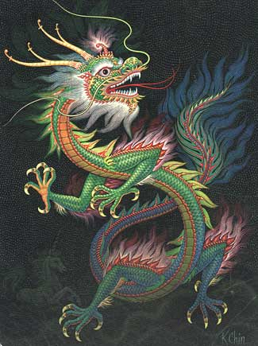

Początek świata
Chiny mają bogatą tradycję mitu kosmogonicznego. Istnieje obraz pierwotnej ziemi okrytej kopułą nieba przymocowaną sznurami, górami lub filarami. Jest opowieść o stworzeniu wszechświata z pary. Trzeci mit opowiada, jak świat powstał z substancji przypominającej
kurze jajo, która rozdzieliła się na niebo i ziemię. Inny, bardziej zawiły mit, opowiada, jak bogini Woman Gua stworzyła wszystkie rzeczy przez swych 70 przemian.
Najbardziej barwna opowieść o stworzeniu wywodzi się
z mniejszości narodowej w Chinach. Opowiada, jak świat i ludzie powstali z umierającego ciała pierwotnego, półboskiego człowieka - olbrzyma Pan Gu. Jego oddech stał się wiatrem i chmurami, jego głos - piorunem, jego oczy - Słońcem i Księżycem,
jego członki - górami. Płyny jego ciała stały się deszczem i rzekami, a ciało - ziemią. Włosy jego głowy stały się gwiazdami, a włosy jego ciała - roślinnością. Zęby, kości i szpik zmieniły się w minerały. Robaki zamieszkujące jego ciało
stały się ludźmi. Mit ten to ciąg przemian. Określa się go mitem kosmologicznego ciała ludzkiego.
